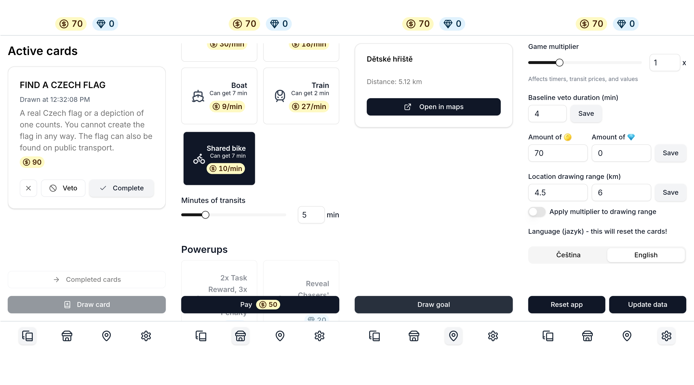

MHD Run
Celoměstská hra na honičku, dopravu a rychlé myšlení. Plňte výzvy, sbírejte mince a unikněte chytačům.
Mince a výzvy
Lízejte karty úkolů a prokletí a vydělávejte mince. Plňte výzvy kdykoli během hry a navyšujte svůj rozpočet.
Doprava a strategie
Utrácejte mince v obchodě za čas na MHD — tramvaj, metro, autobus, loď nebo kolo. Plánujte trasu chytře.
Honička a únik
Běžci musí dosáhnout tajného cíle. Chytači znají jejich polohu, ale ne cíl — a musí je vyfotit jako první. Role se po každém kole mění.
Pravidla
Vše, co potřebuješ vědět před prvním hraním.
1. Základní koncept
Jde o hru dvou týmů na honičku napříč městem. Jeden tým, Běžci, zná svůj tajný cílový bod a snaží se k němu dostat. Cestou je mohou zdržovat úkoly a prokletí z karet, zatímco pomocí power-upů mohou naopak zpomalovat chytače. Druhý tým, Chytači, vidí aktuální polohu běžců, ale neví, kam míří, a snaží se je dohnat dřív, než dosáhnou cíle. Po skončení kola se týmy vymění.
2. Průběh kola
A. Zahájení kola
- Nové kolo začíná po chycení běžců nebo na samém začátku hry.
- Jeden hráč z týmu běžců nejprve v aplikaci provede reset (Nastavení → Resetovat aplikaci).
- Poté si tým vylosuje cílovou pozici (Cíle → Vylosovat cíl) — doporučujeme vzdálenost 5–6 km od startu.
- Jakmile jsou oba týmy připraveny, běžci vyráží. Chytači musí počkat 5 minut, než vyrazí do terénu. Během čekání už ale mohou sledovat polohu běžců a plánovat trasu.
B. Honička
- Pohyb: Hráči využívají MHD (podle toho, co si koupili v obchodě) a vlastní nohy. Tým se nesmí rozdělit.
- Cíl běžců: Dosáhnout cílového místa a pořídit vítězné selfie s cílem dříve, než je chytači vyfotí.
- Cíl chytačů: Chytit běžce. Chycení je úspěšné, když chytači pořídí jednu fotografii, na níž jsou všichni členové týmu běžců jasně identifikovatelní.
- Fotografie musí být pořízena bez přiblížení (zoom).
- Fotografie nesmí být pořízena přes sklo (např. okno autobusu).
- Sledování: Chytači vidí polohu běžců na trackeru. Běžci mohou tracker dočasně vypnout pomocí power-upů z obchodu.
C. Konec kola
Obě fotografie (vítězná i chytací) se posílají do skupinového chatu. Počítá se ta, která byla pořízena dříve. Po skončení kola se role vymění a začne nové kolo.
3. Jak vyhrát
Vítězství běžců: Dorazí do cíle dříve, než je chytači chytí, a pořídí vítězné selfie s cílem.
Vítězství chytačů: Pořídí fotografii běžců (bez zoomu, ne přes sklo, všichni jasně identifikovatelní) dříve, než běžci dosáhnou cíle.
4. Základní pravidla
- Zůstaňte spolu: Členové týmu musí být vždy pohromadě. Nelze se rozdělit.
- MHD: Hráči smí používat pouze dopravní prostředky zakoupené v obchodě ve hře.
- Herní plocha: Hra se odehrává na ploše s přibližně 50 rovnoměrně rozmístěnými cílovými místy.
5. Speciální pravidla pro běžce
A. Peníze
- Každý tým běžců začíná hru se startovním kapitálem 70 🪙. Za ty si kupují dopravu.
- Za splnění složitějších úkolů mohou získat 💎, které slouží k nákupu power-upů.
- Zbývající prostředky se přenášejí do dalšího kola, kdy hráči hrají jako běžci.
B. Karty (Úkoly a Prokletí)
- Lízání: Kdykoliv běžci nemají aktivní úkol, mohou si líznout novou kartu. Pokud ji líznou v MHD, začíná platit až po výstupu.
- Plnění: Pro získání odměny nebo zbavení se prokletí musí běžci splnit požadavky karty. Úkoly nelze plnit v MHD ani ve vestibulech metra.
- Veto a postihy:
- Úkoly lze vetovat (vzdát se) kdykoliv.
- Prokletí nelze vetovat a musí být strpěna.
- Postih (4 minuty / 80 % startovního náskoku): Pokud vetujete úkol nebo porušíte prokletí, tým nesmí po dobu trestu používat MHD, nakupovat v obchodě ani lízat další karty. Pokud jste v MHD při porušení prokletí, musíte co nejdříve vystoupit.
6. Obchod
A. Doprava
- Pokud cestujete MHD, musíte si koupit příslušné minuty v obchodě. Koupit je možno před, v průběhu nebo po jízdě — ale musíte koupit přesný počet minut podle jízdního řádu (např. IDOS, Pubtran nebo Google mapy).
- Platíte za celý tým, ne za každého hráče zvlášť.
B. Power-upy
- Za 💎 drahokamy lze kupovat power-upy. Lze mít více power-upů současně.
- Power-upy mohou dát více peněz, zpomalit chytače nebo poskytnout informace o jejich poloze.
- Pokaždé, když power-up koupíte, musíte to oznámit chytačům (doporučujeme přes skupinový chat). Poté ho můžete použít kdykoliv.
1. The Basic Concept
This is a two-team game of chase across the city. One team, the Runners, know their secret destination and must reach it. Along the way, cards with tasks and curses can slow them down, while power-ups let them hinder the Chasers. The other team, the Chasers, can see the Runners' current location but don't know where they're headed — and must catch them before they reach the goal. After a round ends, teams swap roles.
2. How a Round Works
A. Starting the Round
- A new round begins whenever the Runners are caught or at the very start of the game.
- One player on the Runner team first performs a reset in the app (Settings → Reset App).
- Then the team draws a goal destination (Goals → Draw Goal) — we recommend a distance of 5–6 km from the start.
- Once both teams are ready, the Runners set off. Chasers must wait 5 minutes before heading out — but can already watch the Runners' location and plan their route.
B. The Chase
- Movement: Players use public transport (what they've bought in the shop) and their own feet. The team cannot split up.
- Runners' Goal: Reach the destination and take a victory selfie with the goal before the Chasers photograph them.
- Chasers' Goal: Catch the Runners. A "catch" is successful when the Chasers take a single photo where every member of the Runner team is clearly identifiable.
- The photo must be taken without using zoom.
- The photo cannot be taken through glass (e.g. a bus window).
- Tracking: Chasers can see the Runners' live location on the tracker. Runners can disable the tracker temporarily using power-ups from the shop.
C. Ending the Round
Both photos (the victory selfie and the catch photo) are sent to the group chat. The one taken earlier wins. Roles then swap and a new round begins.
3. How to Win
Runners win: They reach the goal and take a victory selfie with the destination before being caught.
Chasers win: They photograph the Runners (no zoom, not through glass, all clearly identifiable) before the Runners reach the goal.
4. Core Rules
- Stay Together: Team members must stay together at all times. You cannot split up.
- Public Transport: Players may only use forms of transport purchased in the game's shop.
- Playing Area: The game takes place in an area with around 50 evenly distributed target destinations.
5. Special Rules for Runners
A. Money
- Each Runner team begins the game with 70 🪙 in starting capital, used to buy transit.
- Harder tasks reward 💎 gems, which are used to buy power-ups.
- Any remaining resources carry over to the next round when playing as Runners.
B. Cards (Tasks & Curses)
- Drawing: Runners can draw a card at any time as long as they have no active one. If drawn while on public transport, it takes effect only after they exit.
- Completing: Tasks can only be completed outside of public transport and metro vestibules.
- Vetoing & Penalties:
- Tasks can be vetoed at any time.
- Curses cannot be vetoed and must be endured.
- Penalty (4 minutes / 80% of the starting head start): If you veto a task or break a curse, your team cannot use public transport, buy from the shop, or draw cards for the penalty duration. If you're on transit when a curse is broken, exit as soon as possible.
6. Shop
A. Transport
- When you travel by public transport, you must buy the corresponding minutes in the shop. You can buy before, during, or after — but must buy the exact number of minutes shown in the timetable (e.g. IDOS, Pubtran, or Google Maps).
- You pay for the whole team, not per individual.
B. Power-Ups
- For 💎 gems you can buy power-ups. You can hold more than one at a time.
- Power-ups can give you more coins, slow down the Chasers, or reveal information about their location.
- Every time you buy a power-up, you must announce it to the Chasers (recommended via the group chat). You can then use it whenever you like.
Úkoly a Prokletí
Všechny karty dostupné ve hře — úkoly ke splnění a prokletí, která musíš vydržet.
Načítám karty ze spreadsheetu…
Nepodařilo se načíst karty. Zkontroluj připojení a zkus to znovu.
Jak hrát
Průvodce webovou aplikací MHD Run a vším, co potřebuješ k zahájení hry.
Co potřebuješ
Hráči
Alespoň 4 hráči rozdělení do dvou týmů: Utečníci a Chytači. Každý tým potřebuje alespoň jeden telefon s otevřenou aplikací.
Jízdenka MHD
Každý hráč by měl mít platnou jízdenku na pražskou MHD (PragoPas nebo denní jízdenku). V aplikaci kupujete čas jízdy — skutečnou jízdenku na nastoupení stále potřebujete.
Sdílení polohy a komunikace
Chytači potřebují sledovat živou polohu běžců. Doporučujeme aplikaci Hauk. Zároveň si všichni hráči vytvořte skupinový chat (např. WhatsApp) — slouží k oznámení power-upů, sdílení vítězných fotek a obecné komunikaci.
Nastavení aplikace
Otevření aplikace
Navštivte webovou aplikaci MHD Run na telefonu. Nejlépe funguje po přidání na plochu (použijte „Přidat na plochu" v prohlížeči).
Načtení dat
Při prvním spuštění aplikace automaticky stáhne všechna data karet a lokací ze spreadsheetu. Lze to spustit ručně přes Nastavení → Aktualizovat data.
Konfigurace hry
V Nastavení nastavte startovní mince (výchozí 70 🪙) a drahokamy (výchozí 0 💎) pro běžce. Upravte poloměr losování cíle dle potřeby (výchozí 4,5–6 km).
Průběh kola
Reset a vylosování cíle
Jeden hráč z týmu běžců nejprve provede Nastavení → Resetovat aplikaci. Poté tým otevře záložku Cíle a klepne na „Vylosovat cíl". Aplikace vybere náhodné místo vzdálené 5–6 km. Cíl je tajný — chytači ho neznají.
Líznout karty
Kdykoliv (ne v MHD) klepněte na „Líznout kartu" v záložce Karty. Splněním výzvy získáte 🪙 mince nebo 💎 drahokamy. Prokletí jsou aplikována okamžitě a musí být splněna.
Koupit dopravu
V Obchodě vyberte typ dopravy (tramvaj, metro, autobus atd.) a počet minut jízdy. Zaplaťte svými mincemi.
Použít powerupy
Obchod také prodává speciální powerupy za 💎 drahokamy. Mohou zdvojnásobit odměny za karty, zablokovat sledování polohy chytači nebo přenést výzvu na protivníka.
Dosáhnout cíle
Navigujte na místo pomocí MHD (po zakoupení) a pěšky. Po příjezdu pořiďte vítězné selfie s cílem a pošlete ho do skupinového chatu. Pokud ho chytači nestihli pořídit dříve — kolo vyhráváte!
Obrazovky aplikace
Karty
Lízejte a spravujte aktivní karty úkolů a prokletí. Dokončené karty najdete v archivu.
Obchod
Kupujte minuty MHD a powerupy za mince a drahokamy.
Lokace
Vylosujte cílové místo a zjistěte, jak daleko jste v kilometrech.
Nastavení
Konfigurujte mince, drahokamy, poloměr cíle, jazyk a aktualizujte data hry.

What You Need
Players
At least 4 people split into two teams: Runners and Chasers. Each team needs at least one phone with the app open.
Transit Pass
Each player should have a valid Prague public transport pass (PragoPas or a day pass). You will be buying transit time in the app — you still need a real ticket to board.
Location Sharing & Communication
Chasers need to track the Runners' live location. We recommend the Hauk app. All players should also set up a group chat (e.g. WhatsApp) — used to announce power-up activations, share victory photos, and communicate during the game.
Setting Up the App
Open the App
Visit the MHD Run web app on your phone. It works best when added to your home screen (use "Add to Home Screen" in your browser).
Fetch Game Data
On first launch, the app will automatically download all card and location data from the spreadsheet. You can also trigger this manually in Settings → Update Data.
Configure the Game
In Settings, set the starting coins (default 70 🪙) and gems (default 0 💎) for the Runners. Adjust the goal radius if needed (default 4.5–6 km).
Playing a Round
Reset & Draw a Goal
One player on the Runner team first goes to Settings → Reset App. Then the team opens the Goals tab and taps "Draw Goal". The app picks a random destination 5–6 km away. The goal is secret — Chasers don't know it.
Draw Cards
At any time (not on public transport), tap "Draw Card" in the Cards tab. Complete the challenge to earn 🪙 coins or 💎 gems. Curses are applied immediately and must be completed.
Buy Transit
In the Shop, select your transit type (tram, metro, bus, etc.) and how many minutes you want to ride. Pay with your coins.
Use Power-Ups
The Shop also sells special power-up items purchasable with 💎 gems. These can double card rewards, disable the Chasers' location tracker, or transfer a challenge to the opposing team.
Reach Your Goal
Navigate to your destination using public transport (when purchased) and on foot. Once there, take a victory selfie with the goal and post it to the group chat. If the Chasers didn't photograph you first — you win the round!
App Screens
Cards
Draw and manage your active quest and curse cards. See completed cards in the archive.
Shop
Buy transit minutes and power-up items using your coins and gems.
Location
Draw your goal destination and see how far away you are in kilometres.
Settings
Configure coins, gems, goal radius, language, and refresh game data.